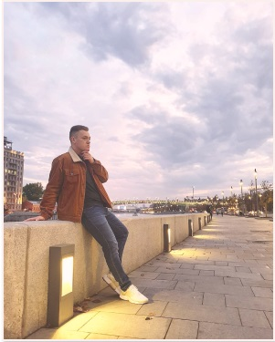

Уверен, не я один замечаю, как год от года наша жизнь становится всё больше похожа на футуристичные миры из научно-фантастических рассказов Уильяма Гибсона. Электромобили, смартфоны, нейросети… а количество самых разных приложений уже обыденность. Ты не просто пиццу на своих часах заказать можешь, но и бизнес вести. Да что уж говорить, тут люди на Марс переселяются! Сегодня програмист — одна из самых востребованных профессий в мире. Мы видим как новая реальность строится вокруг нас. Прямо поверх старой, и строят её руками програмистов.
Когда я понял, что именно так я смогу не просто наблюдать со стороны и довольствоваться прогрессом, но буду создавать, видеть и знать всё это изнутри, — я больше не смог оставаться в стороне. Я понял: в этом и есть мое призвание.